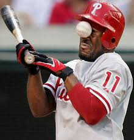

Baseball vs Hockey

Baseball is the only sport in which the team that is winning must continue to play the game, and Baseball is the only sport in which the team that is winning must continue to play the game.
` Why I like baseball?
I like baseball because I play it the most and also it's more engaging. It also more about having fun then just competition. Hockey is more aggressive like physical. Hockey is a lot easier to get hurt then baseball. There are more things to do in baseball then hockey like positions, there are nine different positions (plus bating which is ten) compared to hockey. Hockey has three positions.
The record for most runs scored by a team in a single game is 36 by the cubs in 1897
The NHL is often referred to as the No. 4 league when it comes to ranking the popularity of North American professional team sports.... Hockey has actual climbed the rankings the past few decades.Hockey is a great sport if your fast moving. Hockey is a fast past sport because when you play you only have about a minute of playing and when it's times up you switch with your teammate. It's more physical hands on then baseball. Hockey is also having skill of strategy compared to baseball because baseball you just think where ball is gonna go if you play defense. If your playing offense hitting the ball, you aim and time your hitting. Hockey is more about strategy and more focus on team strats.